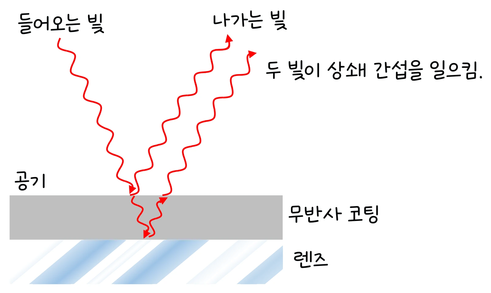

고3 전자기와 양자 · Ⅱ 빛과 정보 통신 · 웹툰 8화 「검게 변하는 비누막」
실험에서 비누막(n = 1.33)과 유리 위 MgF₂ 반사 방지 코팅(n = 1.38)의 두께 d를 0~700 nm로 바꾸고 빨강·초록·파랑·백색광의 반사율을 쟀습니다. 비누막은 d가 0에 가까우면 모든 색에서 반사율이 0이 되어 검게 보였고, 초록빛은 d ≈ 100 nm에서 가장 밝고 200 nm에서 다시 어두웠습니다. 경로차 2nd와 위상 반전으로 간섭 조건을 정리합니다.
실험 데이터 되짚기
실험 안내: 막 종류, 막 두께 d(0~700 nm), 빛의 색을 고른 뒤 반사광 측정하기를 누르면 경로차 2nd, 위상 반전 횟수, 반사율, 보이는 색이 기록됩니다. 같은 색 빛으로 두께를 0부터 여러 번 바꿔 4개 이상 기록하면 데이터 검증 탭에서 두께–반사율 그래프와 처음 밝아지는 두께(이론 λ/4n) 비교표가 열립니다.
| 막 | d (nm) | 2nd (nm) | 2nd ÷ λ | 반사율 (%) | 밝기 |
|---|---|---|---|---|---|
| 비누막 | 0 | 0 | 0 | 0.00 | 검게 보임 |
| 비누막 | 50 | 133 | 0.25 | 4.04 | 중간 |
| 비누막 | 100 | 266 | 0.50 | 8.02 | 가장 밝음 |
| 비누막 | 150 | 399 | 0.75 | 3.94 | 중간 |
| 비누막 | 200 | 532 | 1.00 | 0.00 | 어두움 |
| MgF₂ 코팅 | 100 | 276 | 0.52 | 1.25 | 어두움 (코팅 없는 유리 4.26 %) |
비누막은 앞면에서만 위상이 뒤집히므로 2nd = mλ일 때 어둡고 2nd = (m + ½)λ일 때 밝습니다. d → 0이면 경로차가 0인데도 두 빛이 정반대 위상이 되어 모든 색이 사라집니다. 코팅은 두 면 모두 뒤집혀 효과가 상쇄되므로 거꾸로 2nd = λ/2(두께 λ/4n)에서 어두워져 반사를 4.26 %에서 1.25 %로 줄였습니다.
막의 앞면과 뒷면에서 반사된 두 빛이 겹칩니다. 뒷면 빛은 막 속을 왕복하므로 경로차 = 2nd (수직 입사)만큼 더 갑니다.
움직여 보기
앞면 반사와 뒷면 반사 — 두 빛이 겹쳐 밝아질까, 사라질까?
비누막은 앞면에서만 반 파장 뒤집혀, 두께가 0이면 두 빛이 정반대가 되어 사라집니다(검은 막). 초록 530 nm에서 100 nm가 가장 밝고(8.02 %) 200 nm에서 다시 0 — 표 1과 같습니다. 코팅은 두 면 모두 뒤집혀 100 nm에서 반사가 1.25 %로 줄어듭니다(코팅 없는 유리 4.26 %). 수직 입사, 여러 번 반사는 무시했고 그림의 빛줄기는 보기 쉽게 비스듬히 그렸습니다.
교재 그림
렌즈의 무반사 코팅

코팅 윗면과 아랫면(렌즈 쪽)에서 반사된 두 빛이 반 파장 어긋나 상쇄됩니다. 두께는 λ ÷ 4n(초록 530 nm, MgF₂면 약 96 nm) — 위 실험에서 MgF₂ 코팅을 골라 확인해 보세요.
수직 입사 프레넬 반사 계수 r = (n₁ − n₂)/(n₁ + n₂)로 두 반사광의 진폭을 구하고 R = r₁² + r₂² + 2r₁r₂cos(4πnd/λ)로 합칩니다(여러 번 반사는 무시). 백색광은 400~700 nm를 더해 색을 만듭니다.
움직여 보기
흰 빛 아래 비누막 — 두께마다 다른 색
흰 빛(400~700 nm)의 색마다 반사율 R = r₁² + r₂² + 2r₁r₂cos(4πnd/λ)를 계산해 더한 색입니다. 색마다 밝아지는 두께(λ/4n의 홀수 배)가 달라 무지개 띠가 생기고, 막이 흘러내려 위가 0 nm에 가까워지면 검게 보입니다. 실제 반사는 최대 약 8 %라 화면 밝기는 크게 과장했습니다.
· 실제로는 여러 번 반사, 비스듬한 입사, 굴절률의 파장 의존성이 더해집니다.
· 화면 색은 반사율을 눈에 보이게 과장해 표시한 것입니다(비누막 반사율은 최대 약 8 %).
비누막 n = 1.33 (공기 사이) · MgF₂ n = 1.38, 유리 n = 1.52 · r = (n₁ − n₂) ÷ (n₁ + n₂)
두 면 모두 위상이 뒤집히므로 2nd = λ/2일 때 어둡습니다. d = λ ÷ 4n = 530 ÷ (4 × 1.38) = 약 96 nm. 실험의 100 nm 코팅이 반사율 1.25 %로 거의 최소였습니다.
위상 반전이 한 번이므로 2nd = ½λ일 때 밝습니다. d = λ ÷ 4n = 650 ÷ 5.32 = 약 122 nm. 색마다 밝아지는 두께가 달라 비누막에 무지개색 띠가 생깁니다.